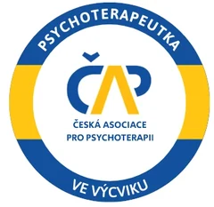
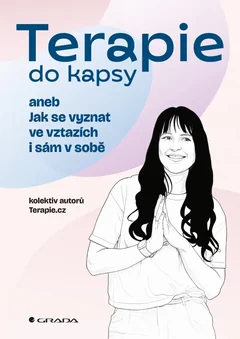

Online
Připojit se můžete z domova nebo jiného klidného a soukromého místa v Česku i v zahraničí.
- Odkaz přijde automaticky v potvrzení rezervace
- Termíny od pondělí do pátku
Individuální psychoterapie online nebo osobně v Ostravě. Pro děti, dospívající i dospělé. Pracuji s tématy jako rodičovství, vztahy, úzkost, deprese a osobní růst.
4 000+ hodin praxe100+ doporučení

Psycholog ve zdravotnictví a terapeut pro děti a dospělé
Jsem psycholožka a psychoterapeutka působící ve zdravotnictví ve Fakultní nemocnici Ostrava, kandidátní členka České asociace pro psychoterapii (ČAP) a členka Asociace klinických psychologů (AKP). Ve své práci propojuji odborné znalosti s citlivým a respektujícím přístupem.
Ve spolupráci s pacientskou organizací IVFka z. s. jsem založila podpůrnou skupinu pro ženy, muže a páry procházející IVF procesem. Skupinu najdete na Facebooku.
Skupina vznikla z potřeby nabídnout prostor sdílení, porozumění a podpory lidem, kteří se na cestě k rodičovství potýkají s náročnými emocemi, nejistotou i nadějí.
Věřím, že každý člověk v sobě nese schopnost růstu, porozumění i proměny – jen někdy potřebuje prostor, kde se může zastavit a znovu nalézt rovnováhu.
Volný čas trávím nejraději v přírodě s našimi koňmi a psem, kteří mi připomínají jednoduchost přítomného okamžiku. Jsem také manželkou a mámou, a právě mateřství pro mě představuje nejhlubší zkušenost s opravdovou blízkostí a trpělivostí.
Vystudovala jsem psychologii na Pražské vysoké škole psychosociálních studií (PVŠPS) a absolvovala pětiletý psychoterapeutický výcvik v daseinsanalýze. Ve Fakultní nemocnici Ostrava pracuji na Klinice dětského lékařství.
Terapeuticky pracuji pod supervizí (PhDr. Marek Hošek / individuál MUDr. Michal Kryl). V rámci specializačního vzdělávání v oboru klinické psychologie pracuji pod vedením Mgr. Marcely Kvardové.
„Naší největší svobodou je svoboda zvolit si svůj postoj.“Viktor E. Frankl
Pomáhám lidem v různých životních situacích
Pokud procházíte náročným obdobím těhotenství, po porodu, nebo řešíte výzvy rodičovství. Zabývám se tématy jako vyčerpanost, pochybnosti, vztah s partnerem po příchodu dítěte.
Pracuji s dětmi a teenagery, kteří se potýkají s úzkostí, školními problémy, vztahovými obtížemi nebo hledají podporu v období dospívání.
Pokud prožíváte úzkost, depresi, ztrátu smyslu, vztahové problémy, nebo procházíte náročnou životní změnou a hledáte podporu.
Pokud se u vás projevují tělesné příznaky spojené s psychickou zátěží, jako bolesti hlavy, žaludku, chronická únava nebo jiné obtíže bez jasné fyzické příčiny.
1 / 12
Online terapie se účastním již přes rok a půl a jsem nanejvýš spokojena. Paní psycholožka je nesmírně vnímavý člověk, naslouchá všem problémům a tématům, které do terapie pokaždé přináším. Líbí se mi způsob vedení sezení a její lidský přístup. Vždy se cítím bezpečně a ráda se do terapie vracím. Za tuto dobu jsme řešili nepřeberné množství životních kotrmelců a paní psycholožka tu pro mě vždy byla, podporovala mě a šla touto cestou se mnou. Je pro mě oporou, na kterou se můžu vždy spolehnout, ať se děje cokoliv. Rozhodně doporučuji!
Karolína
Paní psycholožka s obrovskou empatií a velmi rozumným vhledem do naší situace. Dceru vzala k terapii v nejbližším možném termínu dle toho, co si z mého pohledu poměrně těžká situace žádala. Dcera se k ní vždy těšila, což se nedalo říci o předchozích zkušenostech. Děkujeme moc za celkový přístup.
Ondra
Na terapii jsem přišla v období, kdy jsem si říkala, že už mám většinu věcí v životě odžitých a pojmenovaných. Člověk kolem šedesátky si často myslí, že už se zná. O to větší překvapení pro mě bylo, kolik nového pochopení a klidu mi tahle terapie přinesla. Kristýna na mě od začátku působila velmi přirozeně. Měla jsem pocit, že mě bere jako rovnocenného partnera v rozhovoru, ne jako někoho, koho je potřeba opravovat. Sezení probíhala v klidné atmosféře, kde byl prostor mluvit otevřeně a jít i do hlubších témat, ale bez nátlaku. Kristýna má dar trefit se otázkou přesně tam, kde to dává smysl. Nešla po povrchu a zároveň mě nikdy netlačila za hranice, kam jsem sama nechtěla. Často stačila jedna věta, která ve mně pak ještě dlouho pracovala. Velmi jsem ocenila její nadhled a schopnost vidět věci v širších souvislostech. Díky tomu jsem si spoustu věcí srovnala, některé staré pocity pustila a jiné přijala. Kristýnu bych s čistým svědomím doporučila každému, kdo hledá lidský a respektující přístup.
Jani
Paní Kristýna je člověk na svém místě. Je velmi empatická a lidská. Celé naše setkání vedla velmi citlivě a na konci jsem odcházela s pocitem úlevy a vnitřní podpory, že se dá na všem pracovat. Ještě jednou vám velmi děkuji!
Nikola
Paní terapeutka je úžasná. Ať už se vidíme osobně, nebo online, vždy je atmosféra velmi příjemná, vždy se cítím pochopená, přijatá a v bezpečí. Oceňuji hlavně, že mě nechá volně mluvit, když mám co říct, ale také mě pak skvěle nasměruje otázkami nebo úvahami, když už sama nevím, jak dál pokračovat.
Aneta
S paní Kristýnou jsem absolvoval několik terapií a musím říct, že mě provázela velmi citlivě a s respektem v těžším období mého života. Řešili jsme témata jako coming out, vztahy, i závislosti. Vždy jsem se cítil pochopený a v bezpečném prostoru. Její empatický přístup mi pomohl vidět věci z nové perspektivy a udělat konkrétní kroky v praxi. Za mě můžu doporučit!
KS
Paní magistra je velice příjemná a skvěle se s ní spolupracuje. Byť jsem s ní měla jen 4 sezení, protože jsem potřebovala akutně pomoci, opravdu se tak stalo. Děkuji.
Ivča
Chtěla bych v prvé řadě poděkovat za pomoc s překonáním těžkých chvil a vyrovnáním se se smrtí našich dětí. Přístup v průběhu sezení byl empatický a lidský. Velice mi pomohlo být konečně vyslyšena. Napsání dopisu pro mé děti a jak s ním naložit byl posledním krokem pro uzdravení mého srdce a mysli. Ještě jednou moc děkuji, byla jste mi neskutečnou pomoci.
Pavla
Cením si empatického a pragmatického přístupu od paní Kristýny. Díky skvělé komunikaci si dokázala získat mého syna, který se na další schůzku, k mému překvapení, těší.
Ondřej K.
Hledala jsem terapii, kde se mi dostane nejen profesionální pomoci, ale také lidského pochopení a empatie, a po pár neúspěšných pokusech s jinými terapeuty jsem našla Kristýnu. Pracujeme spolu již dva roky a naše sezení mi pomáhají překonat své zdánlivé limity, posouvat se v životě a lépe porozumět sama sobě i ostatním. Vždy se k vám, Kristýno, ráda vracím a děkuji za vaši profesionalitu, vřelý přístup, trpělivost a přijetí.
Ester B.
S Kristýnou spolupracuji už více než rok a mohu ji s čistým svědomím doporučit. Kristýna je velmi empatická a trpělivá. Během terapií se cítím bezpečně, což mi umožňuje se plně otevřít, aniž bych se musela bát posuzování. Když jsou mé myšlenky příliš chaotické, dokáže přesně shrnout to, co jsem sama chtěla vyjádřit. Velkým bonusem je pro mě také možnost online terapií.
Ivana
Kristýnu mohu jen doporučit. Jsem moc ráda, ze jsem narazila právě na ni. Celkem rychle jsem si k ní našla důvěru. Není to terapeut, který jen vyslechne, ale i dodá názor na věc a případný směr. Mám pocit, že mi rozumí. Nebojím se otevřít. Je empatická, lidská a pro slova nejde daleko, což mi vyhovuje.
Ilona
Všechna hodnocení: Známý lékař · Google
Profesionální psychologická podpora pro děti a dospělé
Nabízím individuální terapeutickou podporu osobně v soukromé ordinaci v Ostravě i online, podle toho, co vám vyhovuje. Pracuji s dětmi, adolescenty i dospělými v bezpečném a respektujícím prostředí.
Svou práci pravidelně konzultuji v supervizi.
Když potřebujete mluvit dřív, než je volno v kalendáři: v pracovní den, o víkendu i ve svátek. Domluvíme se zprávou.
První setkání
Objednat seOd rezervace termínu k prvnímu setkání a další spolupráci
Termín si můžete vybrat přímo v online rezervačním systému. Při rezervaci zvolíte osobní setkání v Ostravě, nebo online terapii.
Nemusíte se nijak zvlášť připravovat ani mít předem jasno v tom, co přesně chcete řešit. Začneme tím, co je pro vás právě důležité.
Během 50 minut společně zmapujeme vaši situaci a očekávání. Setkání vám také umožní zjistit, zda vám můj způsob práce vyhovuje.
Pokud se rozhodneme pokračovat, domluvíme si frekvenci podle vašich potřeb. Terapie obvykle probíhá jednou týdně nebo jednou za 14 dní.
Přicházejte a zvoňte prosím až v čase vašeho objednaného sezení. V prostorách poradny není čekárna.
Odkaz na videohovor obdržíte automaticky v e-mailu s potvrzením rezervace. Potřebujete stabilní připojení a klidné, soukromé místo.
Termín můžete přesunout nebo zrušit přes odkaz v potvrzovacím e-mailu, nejpozději 36 hodin před začátkem. Platba se vám pak vrátí celá. Při pozdějším zrušení nebo nedostavení se platba nevrací.
Nemusíte se předem rozhodnout pro dlouhodobou terapii. První setkání může sloužit i ke společnému zmapování toho, zda a jak by vám psychoterapie mohla být užitečná.
Dvě možnosti spolupráce podle toho, co vám vyhovuje
Terapeutická setkání nabízím osobně v Ostravě i online. Můžete si zvolit formu, ve které se cítíte bezpečně a která odpovídá vašim možnostem. Formu si vyberete při rezervaci a v případě potřeby ji můžeme později společně změnit.
Připojit se můžete z domova nebo jiného klidného a soukromého místa v Česku i v zahraničí.
Setkání tváří v tvář v klidném prostoru poradny pro ty, kterým osobní kontakt vyhovuje více.
Odpovědi na nejčastější otázky o terapii a spolupráci
Standardní terapeutické sezení trvá 50 minut.
Cena jednoho individuálního terapeutického setkání je 1 100 Kč, a to jak pro online terapii, tak pro osobní setkání v Ostravě. Podrobnosti najdete v ceníku.
Na začátku terapie doporučuji setkávání jednou týdně, abychom mohli efektivně pracovat na vašich cílech. Postupem času, když se začnete cítit lépe, můžeme přejít na setkávání jednou za 14 dní. Frekvenci vždy upravujeme podle vašich potřeb a pokroku.
Momentálně nepracuji přímo s pojišťovnami a terapie je plně hrazená klientem. Některé pojišťovny ale poskytují příspěvek na psychoterapii v rámci preventivních programů - doporučuji se informovat přímo u vaší pojišťovny. Ráda vám vystavím fakturu či potvrzení o absolvování terapie, které můžete předložit pojišťovně.
Ano. Nabízím osobní setkání v Ostravě i online terapii. Formu si zvolíte při rezervaci a v průběhu spolupráce ji můžeme podle potřeby změnit.
Termín můžete přesunout nebo zrušit přes odkaz v potvrzovacím e-mailu, nejpozději 36 hodin před začátkem. Platba se vám pak vrátí celá. Při pozdějším zrušení nebo nedostavení se platba nevrací.
Ano, po domluvě nabízím mimořádné setkání dřív, než je volno v kalendáři: v pracovní den za 1 800 Kč, o víkendu nebo státním svátku za 2 200 Kč. Stačí mi napsat přes WhatsApp, SMS nebo e-mail: jak se domluvit. Dostupnost závisí na mých aktuálních časových možnostech. Podrobnosti najdete v ceníku. Nejedná se o krizovou službu, v akutní krizi je možné využít Linku první psychické pomoci 116 123.
Aktivní členství v profesních organizacích a profily na důvěryhodných platformách

Jsem hrdou kandidátní členkou České asociace pro psychoterapii (ČAP), která sdružuje odborníky v oblasti psychoterapie a dbá na vysoké etické i profesní standardy. Členství v ČAP je pro mě závazkem k dalšímu vzdělávání, odbornému růstu a poskytování kvalitní péče svým klientům.
Můj profil v ČAPPodílela jsem se autorským textem na knize Terapie do kapsy: Jak se vyznat ve vztazích i sám v sobě, která vyšla v roce 2026 v nakladatelství Grada. Kniha přibližuje témata duševního zdraví, vztahů a psychoterapie srozumitelnou a praktickou formou.
